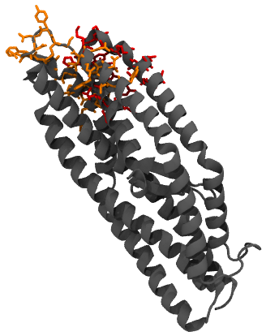
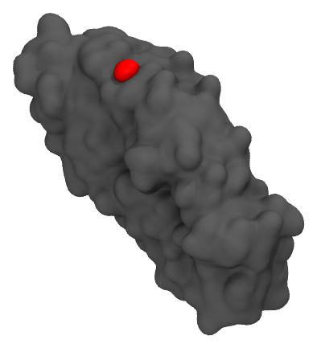
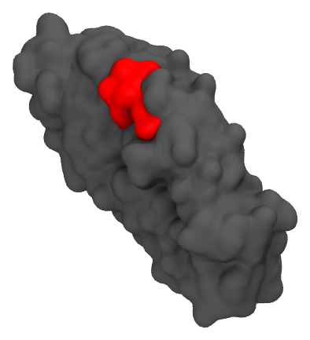
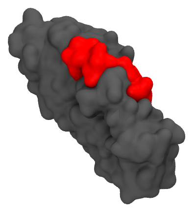
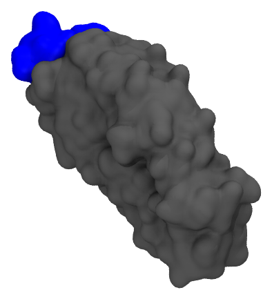
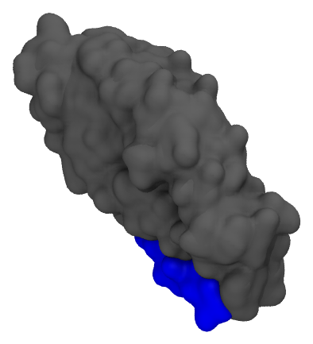

Methods reference · updated 2026-11-16
What each part of the pipeline does, how it does it, and why it is built the way it is. The Pipeline page is the map; this is the manual. Equations sit behind the expanders, so you can read the reasoning first and open the math where you want it.
The goal is narrow and specific: present a target epitope on a small de novo protein in the same shape it has on the native antigen, so an antibody that binds the antigen also binds the scaffold. The generative backbone (RFdiffusion3 → ProteinMPNN → AlphaFold3) proposes candidates; everything episcaf adds is a way to choose the epitope well and rank the candidates by two things that matter for a real binder — whether the epitope kept its native geometry and whether an antibody can actually reach it.
There are two ways in, depending on whether the binding site is already known. The tool infers which case applies from the uploaded structure and lets you override that choice.
When the upload is an antibody–antigen complex, the epitope is not something to predict — it is observed. We take every antigen residue with a heavy atom within 4 Å of the antibody as the contact epitope, group the residues into sequence segments (stretches of the amino-acid sequence; one epitope can draw from several that sit next to each other in the folded structure, called islands elsewhere on this page), and hand that to generation. On the 8PWW benchmark this 4 Å contact rule returns the same epitope residues reported for that complex.

In: antibody–antigen complex (PDB). → Out: the epitope — the antigen residues the antibody contacts.
episcaf_analysis/growpatch/read.py · detect_complex()
With a lone antigen the epitope is not known in advance. growPatch samples candidate surface patches across the antigen, so that a range of plausible antibody footprints is available to scaffold and screen. The sampling is bounded: a surface-exposure cut, a fixed patch size, a cap on the number of sequence segments per patch, and deduplication (parameters below) all limit it, so it covers many surface patches rather than every possible one.
This is a different task from epitope predictors such as DiscoTope and BepiPred. Those rank how antibody-like each surface residue is and return a predicted epitope. growPatch does not rank surfaces by binding likelihood; it generates candidate regions as input to downstream design and scoring. A patch here is a candidate for design, not a claim that an antibody binds it.
In: antigen structure (one chain, PDB). → Out: a set of candidate epitope patches, each a residue set that could be an antibody footprint.
Two sampling methods run, and the tool combines them into one candidate set (labelled All candidates in the viewer) because each finds patches the other misses:





Each candidate records which method or methods produced it. Agreement between the two methods is provenance (the same patch was reached two ways); it is not on its own evidence that the patch is a real epitope.
A residue counts as surface by its relative solvent-accessible area: its SASA in the structure divided by the maximum that residue type can expose (Tien 2013 theoretical MAXASA). Relative, so a buried large residue and a buried small one read the same.
Two candidate patches A and B are near-duplicates when their residue sets overlap enough:
episcaf_analysis/growpatch/{core,read,eyeview}.py
Generation is a loop, not a single pass. Each round builds backbones around the fixed epitope, filters and folds them, scores the results, and lets the winners seed the next round. The expensive steps (diffusion and folding) run on the cluster GPU; the cheap filter in the middle is what makes the budget go further.
RFdiffusion3 diffuses a protein backbone around the epitope, which is held fixed as a contig (a span of residues whose coordinates stay fixed during diffusion) so its geometry is preserved while the scaffold is built around it. The default is 8 backbones per contig; more backbones means more raw diversity at linear cost. An optional helix bias pushes the scaffold toward helical secondary structure.
In: epitope residues held fixed (a contig spec on the antigen). → Out: de novo backbone(s) presenting that epitope — coordinates, no sequence yet.
We stay on RFdiffusion3. RFD4 / Proteina is tracked as a possible future switch, not an adopted one — it is not unambiguously better for this fixed-epitope task yet.
Before spending MPNN and AlphaFold3 on a backbone, score it for antibody accessibility and drop the ones that bury the epitope. This runs on the bare backbone, needs no sequence or fold, and is the single biggest compute saving in the loop: clashy backbones are removed before the two expensive steps touch them. The score is AOMclash (how antibody obstruction is estimated; defined below); the pre-filter keeps the best fraction per epitope (default half).
In: RFd3 backbones + the epitope frame. → Out: the subset of backbones kept — those whose epitope stays sterically accessible, by keep-frac.
scripts/aomclash_prefilter.py
ProteinMPNN designs sequences for each surviving backbone with the epitope positions held fixed (8 sequences per backbone by default), so the epitope keeps its identity while the scaffold sequence is optimised for the fold. AlphaFold3 then predicts the structure of each sequence (single-sequence, fixed seed). Every downstream metric is computed on that predicted structure: epitope RMSD to the native, antibody clashes, PAE. These are quantities read off a prediction; AlphaFold3 does not measure whether a design folds, stays stable, or binds.
ProteinMPNN — In: a backbone. → Out: amino-acid sequence(s) for it.
AlphaFold3 — In: a designed sequence (with antigen/epitope context). → Out: predicted structure + confidence/metrics (pLDDT, PAE, RMSD, clash counts).
scripts/stage03_mpnn_*.py · stage04_af3_*
When a design scores well, the backbones near it in shape space are worth exploring. A partial-diffusion child takes a winning backbone, adds a little noise back, and denoises again with the epitope fixed — a controlled step to a neighbour of something that already worked. The loop also randomises island order between rounds so a multi-island epitope is not always built in the same sequence layout.
How much of each round’s budget goes to children rather than fresh de-novo backbones is adaptive. Round 0 is all de-novo (there are no winners yet). After that the child share grows with a streak of improving rounds and is capped, so a run that keeps finding better designs leans into exploitation, while a stalled run keeps exploring.
with per-streak step sstep = 0.25 and cap
fmax = 0.6. streak(r) is the number of consecutive
rounds whose best score beat the previous round’s.
episcaf_pipeline/ipd.py · ipd_driver.py · scripts/ipd_round.py
Two models and one combiner. One asks whether an antibody can physically reach the epitope on the design; the other estimates whether the design will bind in the assay. The composite folds them together with epitope-fidelity metrics into a single rank.
Every metric below is computed on the AlphaFold3-predicted structure unless stated otherwise.
Where a required metric is missing, a design is not evaluated on that criterion rather than treated as a pass.
A scaffold can present the epitope perfectly and still be useless if its own bulk sits where the
antibody needs to be. AOMclash measures that. From roughly a thousand real antibody–antigen
complexes it builds an occupancy map: in a frame centred on the epitope, a
boolean 33×33×33 grid at 2 Å marks where antibody atoms tend to sit, averaged
over all the complexes. The map is antibody geometry only — it never sees the design — so
it transfers to a new antigen by construction. For a design, we read the map at each scaffold atom
and sum it over the atoms that fall outside the native antigen’s own volume (the
“free” atoms, more than 4 Å from any native-antigen atom). That sum,
s_p1_free, is high when the scaffold intrudes into antibody space.
In: a design's scaffold atoms, framed on the epitope. → Out: s_p1_free — the occupancy summed over the free atoms, an accessibility score in AF3-clash units.
AOMclash is a model-based estimate of accessibility, not a measurement on a real antibody–antigen complex. The isotonic step below reports it in AlphaFold3 clash-count units, which are themselves counts on a predicted structure, so this is an estimate calibrated to another model’s output.
s_p1_free), calibrated onto the AlphaFold3 clash count; the 39-feature model is kept
as the recorded, rejected baseline. AOMclash replaces the earlier geometric accessibility surrogate
(a native-aware cylinder fitted over the epitope) throughout, as a continuous, finer-grained
estimate.Each complex contributes a boolean occupancy grid in the epitope frame; the map is their mean (an empirical probability that antibody mass occupies a voxel):
The shipped score reads that map at each scaffold atom a, counting only atoms far from the native antigen:
A monotone isotonic fit then maps s_p1_free onto the AF3 clashing-residue
count, so the score reads in clash units while staying one rank-preserving feature.
episcaf_analysis/aomclash/ · SHIPPED_FEATURE = s_p1_free
Beyond geometry, a small logistic model produces a binding score for each design. It is a scorecard, not a black box: L2-regularised logistic regression over an inspectable feature set, the design metrics, secondary-structure content, and three native-context terms (an intra-epitope electrostatic sum, a scaffold-to-epitope size ratio, and local antigen crowding). Performance is measured by repeated cross-validation grouped by epitope (56 epitopes, 2,720 assayed designs, 217 binders, base rate 8%), so every design is scored by a model that never trained on its antibody. On that held-out evaluation it reaches ROC-AUC 0.812.
In: a design's features (design metrics, secondary-structure content, static native-context terms). → Out: a binding score, binding_pred, used to rank designs; higher is a stronger predicted binder under the model.
Read as a re-ranking layer, the model enriches for binders: a random design in this setting binds about 8% of the time; designs that pass the four DP3 filters (defined above) bind about 24%; ranking those passers by the binding score lifts the top band to roughly a third, and the very top few percent higher still.
Features x̃ are median-imputed and standardised; the weights
β are L2-regularised and class-balanced for the 8% base rate. Class
balancing makes the output order designs reliably but shifts its level, so binding_pred
is used as a ranking score rather than a calibrated binding probability. Because the score is
additive in interpretable features, each weight reads directly as that feature’s pull.
episcaf_analysis/binding_model/ · results/feature_model/model_v1_findings.md
The final rank is a weighted sum of a few transformed metrics, set by a named preset rather than hard-coded, so the dials live in one readable file. Each metric is first put on a common scale (a percentile or a saturating sigmoid), then combined. The accessibility term is where the two input modes differ, and it is the only place they differ:
antibody_softgate.twelvemer.Selection ranks by composite score and takes the top k designs per epitope (the top-k, with k set per run). It does not apply a hard pass/fail gate, so a strong design is not thrown out for narrowly missing one threshold.
In: AF3 per-design metrics (with binding_pred where features exist), plus a preset. → Out: designs ranked by composite score, then the top k per epitope selected.
Tm is the per-metric transform (percentile or sigmoid). Weights renormalise over whichever metrics are present, so a missing column rescales the rest rather than breaking the score.
episcaf_analysis/presets.py · score.py · scripts/stage06_select.py
The site you are reading is static — GitHub Pages cannot run Python. The real work happens in two backends, and the page talks to whichever one is available.
scripts/growpatch_serve.py). A small
standard-library server you run on your own machine. It does the CPU work (detect the antibody,
run growPatch, build the RFd3 contigs), so processing your own antigen runs the actual steps
rather than a canned response. No extra dependencies.episcaf_service/, FastAPI). The backend
that reaches the GPU pipeline. You run it on a cluster-access host and reach it over a private SSH
tunnel. Set its URL in the GUI tool and a run stages for real.episcaf_service/README.md · /submit stages, /results scores
Every number on this page comes from code run on real structures, and each method points at the file that implements it (the grey paths above). The scorer weights and transforms are dials in a preset file, not constants buried in code; the occupancy map is a vendored, regenerable artifact; and the binding model’s cross-validation is reproducible from one script. The manuscript is the full written record, and the Pipeline page shows what is shipped versus still in progress.
In short: fix the epitope (observed on a complex, or sampled as candidate patches on a lone antigen), build scaffolds around it in a filtered loop, and rank them by whether the epitope kept its shape and whether an antibody can reach it, with the reasoning and the math open to inspection.